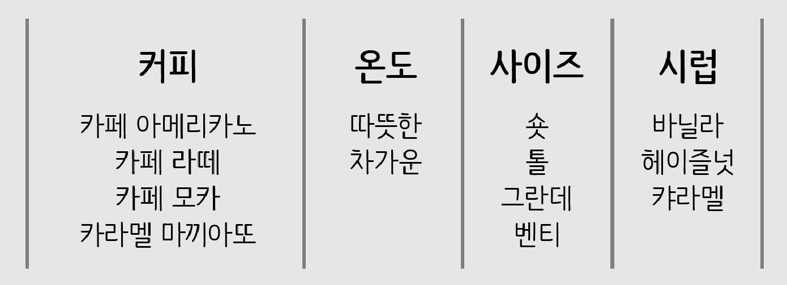
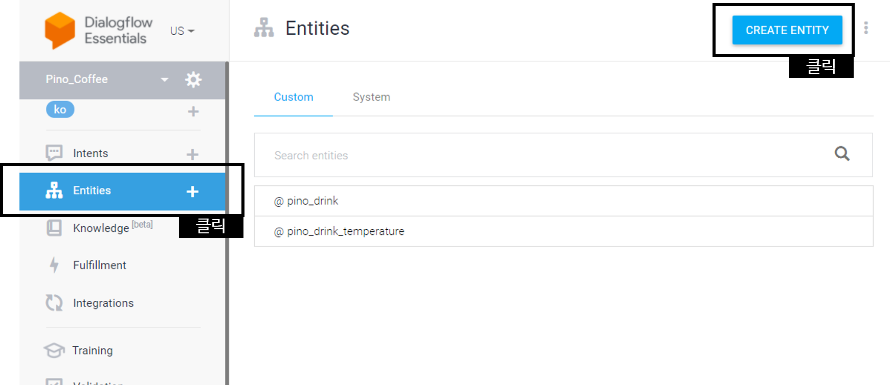
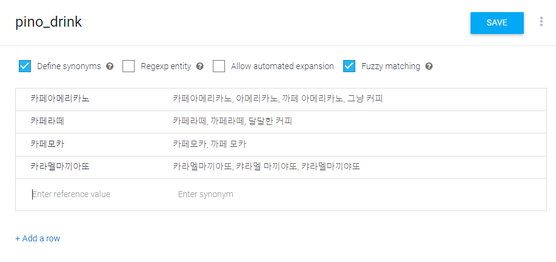
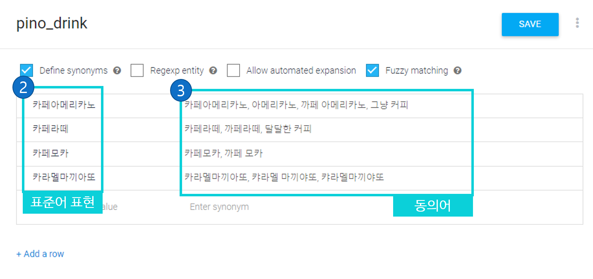
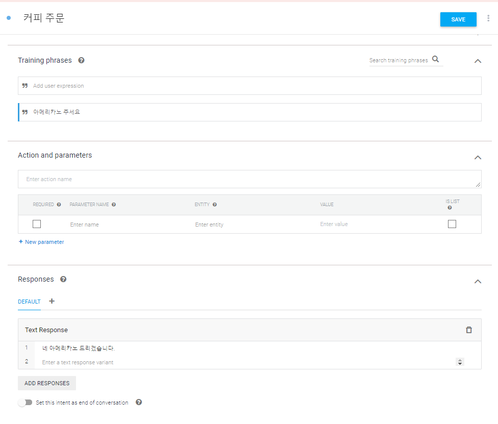
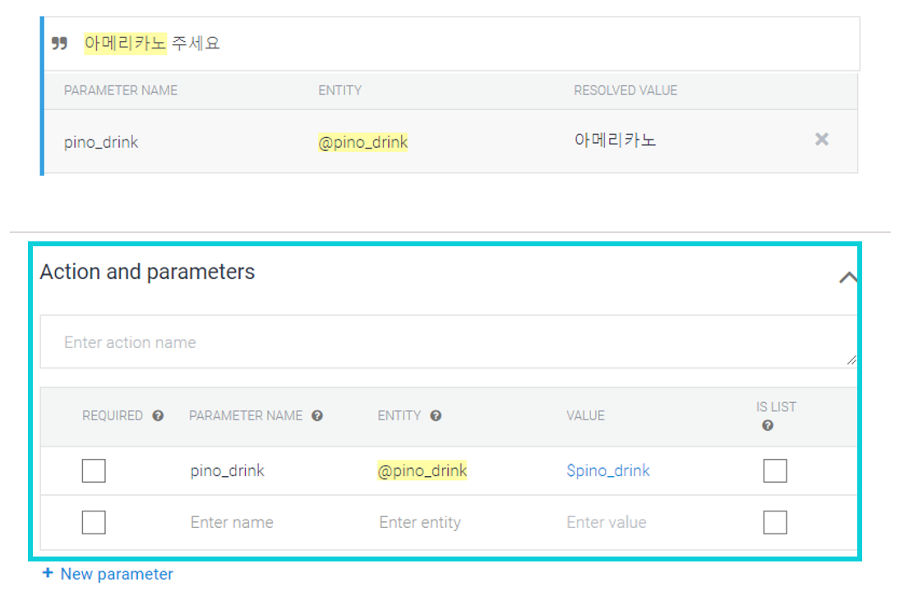
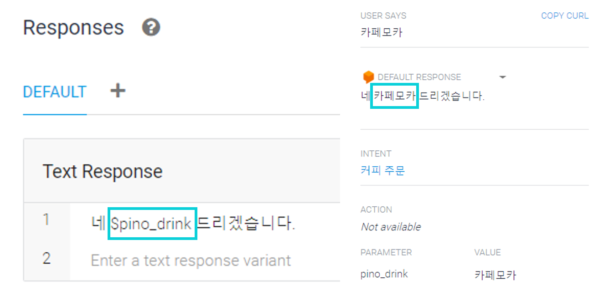
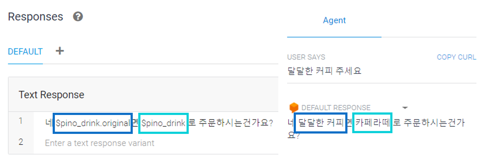

B. 객체(Entity)이용 챗봇 만들기 [1]¶
좀더 복잡하고 다양한 상황에서 작동하는 챗봇을 위해서
엔티티 (개체 Entity) 기능을 활용할수 있습니다.
1. 커피 메뉴판¶
{kind=link}
다음과 같은 커피 메뉴판을 예시로 들어보겠습니다.
이 모든 경우에대해 챗봇을 개별로 제작하면 4X2X4X4 = 128가지의 대화의 경우가 나오게됩니다.
이를 모두 만들수는 없음으로 이를 엔티티 (개체 Entity)를 통해서 처리할 수 있습니다.
개체 (Entity)는 문장에서 특정한 용도로 쓰이는 단어를 추출하기위해서 만드는 일종의 사전입니다.
같은속성을 지닌 단어와 동의어들을 미리 정의를 해둠으로서 챗봇이 다양한 상황에서 단어를 이해할수 있게 해줍니다.
2 엔티티 생성 및 작성¶
{kind=link}
메인화면의 《Entity》 탭에 들어가서 《Create Entity》 버튼을 클릭, 새 엔티티를 생성합니다
{kind=link}
엔티티 작성은 다음과 같이 이루어집니다.
{kind=link}
2.2 엔티티 작성 2¶
{kind=link}
그다음 2번에 이 《pino_drink》 라는 키워드로 처리하고싶은 단어들의 표준어 표현을 넣어줍니다.
이 키워드로 우리는 음료를 구분하고 싶음으로
《카페아메리카노》 , 《카페라떼》 , 《카페모카》 , 《카라멜마끼아또》 를 넣었습니다.
그 다음에는 3번구역에 동의어 를 추가해줍니다,
예를들면 《카페아메리카노》를 《아메리카노》 , 《까페 아메리카노》 라고도 많이 표현하고
혹은 《그냥 커피》 라고 하시는 분이 있을수도 있음으로 이를 다이얼로그 플로우가 인식할 수 있게 동의어사전에 넣어줍니다.
동의어의 제일 첫 동의어는 표준어 표현이 자동으로 할당 이 됩니다.
{kind=link}
3. intent 에서 entity 사용¶
{kind=link}
자 그러면 이제 커피를 주문받는 인텐트를 만들어서 엔티티를 실제 사용해 보겠습니다.
Q : 《아메리카노 주세요》
A : 《네 아메리카노 드리겠습니다》
엔티티 기능이 없다면 위의 메뉴판을 처리하려면 이런 인텐트를 수십개를 작성해야 하겠지만
엔티티를 이용해서 이를 한가지로 통합할 수 있습니다.
{kind=link}
{kind=link}
{kind=link}
4. 답변에서 entity출력¶
다음은 인식된 엔티티의 값을 대답에서 활용해 보겠습니다.
{kind=link}
인식된 엔티티 는 인텐트에서 사용되는 변수로 인식되며
Action and parameters에 설정되어있고 $ 기호를 통해서 사용이 가능합니다.
{kind=link}
다음과 같이 대화문을 작성하면
$pino_drink 자리에는 다음과 같이 표준어 표현이 담겨서 처리되게 됩니다
{kind=link}
표준어 표현이 아닌 입력단어 그대로 사용하려먼 $pino_drink.original 으로 사용하면 됩니다
이제 다음장에서 여러개의 엔티티를 이용한 대화문을 작성하는법을 알아보겠습니다.